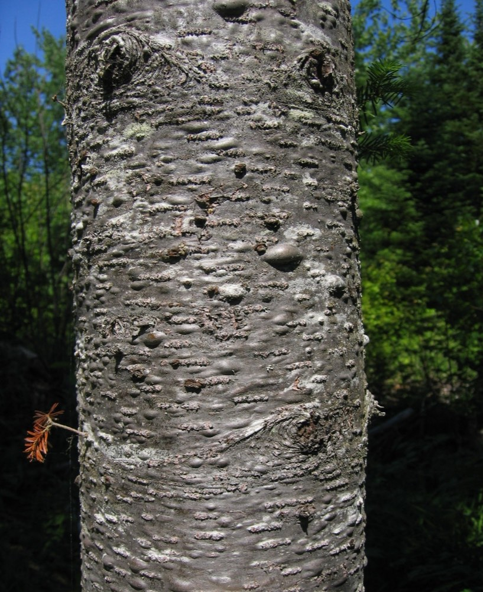
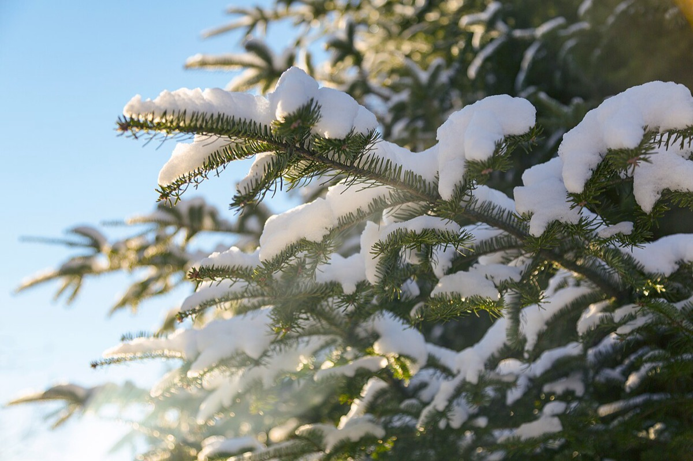
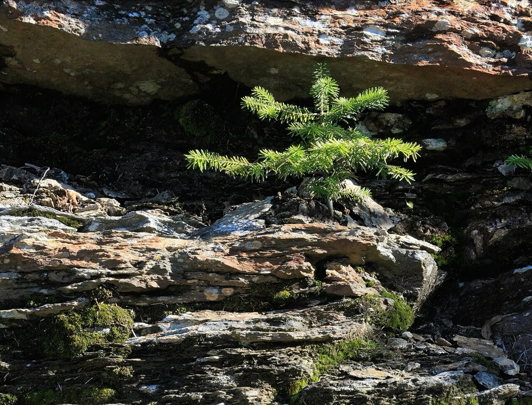

Balsam Fir
Abies balsamea
- Kind
- tree · Pinaceae
- Native to Vermont
- yes
- Legal status
- Native; no special legal status found (checked 2026-10-30)
- Look-alikes
- Fraser fir; White fir; Eastern hemlock; English yew
Pictures



Names
Balsam fir, Abies balsamea. A common Christmas tree and, with red spruce, a main tree of high-elevation spruce-fir forest.
Range and habitat
Native. A small to medium-sized tree reaching 80 feet with a very narrow, spire-like crown. In the New England seedling guide balsam fir is most often met at high-elevation sites, in montane spruce-fir forest that begins around 2,500 feet in northern Vermont and about 2,800 feet in the south. The Landowner's Guide says spruce and fir are the most common softwoods in Vermont deer winter habitat.
How to identify (by season; look-alikes and the key difference)
- Needles: flattened, about 3/4 inch, shiny dark green above and silvery-blue below.
- Cones: upright, 2 to 3 1/2 inches, green with a purple tinge; the scales drop with the seed in late summer.
- Bark: smooth, shiny silvery gray-brown with raised resin blisters; the largest stems may become a bit scaly.
- Buds: reddish brown and resin-covered; twigs yellow-green becoming gray.
- Look-alikes: Fraser fir, white fir, eastern hemlock and English yew. Hemlock needles are shorter (about 1/2 inch).
By growth stage (trees: seedling, sapling, pole-size, mature or old; what to look at in each)
| Stage | What to look at | What you see |
|---|---|---|
| Small seedling | cotyledons, needle length | A whorl of three to five needle-like cotyledons, most often four or five; needle lengths vary on the same plant but long needles are usually present somewhere on the stem. |
| Larger seedling | needles, stomata | Long needles (2 cm or longer) with two distinct white lines of stomata beneath. |
| Sapling and pole-size | bark, buds | Smooth silvery gray-brown bark with resin blisters; resin-covered reddish-brown buds. |
| Mature and old trees | crown, bark | Narrow spire-like crown to about 80 feet; bark may become scaly on the largest stems. |
| Winter, any age | needles, buds | The needle characters above; resin-covered buds. |
| Fruit (late summer) | cones | Upright cones that fall apart, leaving a spike. |
Watch for clubmosses mistaken for conifer seedlings (How to Identify Trees).
Through the year
Dates are typical for Vermont and shift with elevation and year; "approximate" means the source gave a season and the dates are a translation of it.
| When | What | Look for | What to do | Dates |
|---|---|---|---|---|
| Aug 15 to Sep 30 | cones (identify) | Upright green cones tinged purple, 2 to 3 1/2 inches long; the scales fall away as the seed disperses in late summer, leaving a bare spike on the twig. | - | approximate |
| Nov 1 to Mar 31 | dormant (identify) | Evergreen: flat needles about 3/4 inch, shiny dark green above and silvery-blue beneath; smooth gray bark with raised resin blisters; narrow spire-like crown; reddish-brown resin-covered buds. | - | approximate |
Signs on the land (tracks, scat, browse, nests, holes, calls)
A search summary of the factsheet says moose browse it heavily in winter and black bears strip the bark and lick the exposed tissue (Moose, Black Bear).
Role in the forest (what it eats, what eats it, what it needs)
Winter cover for deer and snowshoe hare (White-tailed Deer, Snowshoe Hare); with spruce it makes the base and travel cover hares need.
What helps it thrive (light, soil, shelter, food and the trees it uses)
- Light: seedlings are very shade tolerant and less exacting about the seedbed than many associates; it readily establishes under a canopy of hardwoods and conifers (FEIS).
- Soil and place: grows on all soil textures from heavy clay to rocky and tolerates a wide range of acidity; in the Lake States it is most common on cool, wet-mesic sites with a pH of 5.1 to 6.0. It occurs on mountain slopes, glaciated uplands, alluvial flats, peatlands and swamps, sometimes dominates upper slopes above 3,200 feet in the Adirondacks, and grows up to timberline at about 5,600 feet in the Appalachians.
- Seedbed: establishment is generally best on mineral soil; hardwood leaf litter is a poor seedbed.
- Wildlife: an important winter cover for deer and moose and a major winter food of moose; deer, snowshoe hares and especially moose browse regeneration on cutovers; grouse eat the needles, tips and buds (Moose, Snowshoe Hare, Spruce Budworm). It is more commonly found in mixed than pure stands, with spruce, paper birch and aspen.
Managing for it (habitat practices) and living with it (conflicts and damage)
The deer-yard guidance gives fir stands a maturity age of about 60 years in group-selection management, and says to remove the biggest fir first when converting an even-aged stand and leave spruce, which is longer-lived and more wind-firm (White-tailed Deer).
Legal status
No special status found.
Sources
- Virginia Tech Dendrology, Balsam fir: https://dendro.cnre.vt.edu/dendrology/syllabus/factsheet.cfm?ID=119 (read 2026-10-30)
- J. Robertson and J. Truong, A Guide to the Seedlings of New England (FEMC, 2021): https://www.uvm.edu/femc/attachments/project/999/seedling_guide-compressed_1.pdf
- USDA Forest Service, Fire Effects Information System, Abies balsamea: https://www.fs.usda.gov/database/feis/plants/tree/abibal/all.html (read through a summarizing fetch 2026-11-01)
What this page is based on
Kind of source: mixed (Virginia Tech factsheet; New England seedling guide; a search summary of the factsheet for wildlife)
What was read: Virginia Tech Dendrology factsheet (ID 119) for balsam fir, read through a summarizing fetch on 2026-10-30, and the balsam fir pages of A Guide to the Seedlings of New England (read as text). The factsheet gives no habitat and does not state that the needles are evergreen or how they are arranged; that balsam fir is an evergreen softwood giving winter cover comes from the Landowner's Guide deer chapter. Calendar windows translate 'late summer' and 'winter'. Habitat needs (light, soil, regeneration, response to cutting) added 2026-11-01 from the USDA Forest Service Fire Effects Information System species review (summarizing fetch); the review is national in scope and the Northeast details are those it names.
Last checked: 2026-10-30
Vermont land and forest reference, built 2026-11-05. Rules and dates here are summaries, not legal advice; dates shift with elevation and year. Photo and recording credits · Note: _reference/US-VT/Species/Balsam Fir.md